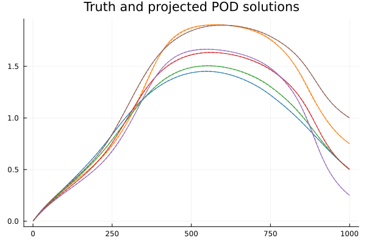

Reduced Basis Method Tutorial
This tutorial follows closely to the book Reduced Basis Methods for Partial Differential Equations by Quateroni, Alfie, Manzoni, and Negri. For more information, see their text, source 2.
Problem formulation and motivation
In this tutorial, we consider scalar, linear, elliptic, parametrized PDEs of the form
\[\mathcal{L}(u(x,p),p) = f(x,p)\]
where $p$ is some parameter (vector), and the solution $u$ depends on a spatial variable $x$ and the parameter. We are interested in such problems specifically as upon discretization, say with finite elements, the discrete problem can be written in the form
\[A(p) u(p) = b(p)\]
where $A(p)\in\mathbb{R}^{N\times N}$, $u(p)\in\mathbb{R}^N$, and $b(p)\in\mathbb{R}^N$. Additionally, we will assume affine parameter dependence, i.e., we can write $A(p)$ as
\[A(p) = \sum_{i=1}^{QA} \theta_i^A(p) A_i,\]
and $b(p)$ as
\[b(p) = \sum_{i=1}^{Qb} \theta_i^b(p) b_i.\]
Note that if a problem does not match this form, there exist algorithms ((D)EIM) to convert the problem to this form.
Upon sufficient discretization, we expect $N$ to be large, and thus the problem of inverting $A(p)$ several times for different parameter values can be expensive. A model order reduction technique is to build a reduced basis (RB) approximation to the solution. To do this, we wish to build an appropriate $r$ dimensional RB space, with $r \ll N$, on wish to use Galerkin projection.
Specifically, given linearly independent (assumed orthogonal) basis vectors to this space, $\{v_i\}_{i=1}^r$, we construct the RB space matrix
\[V = \begin{bmatrix} | & | & & | \\ v_1 & v_2 & \cdots & v_r \\ | & | & & | \end{bmatrix} \in \mathbb{R}^{N \times r}\]
such that the problem can be approximated by
\[V^T A(p) V u_r(p) = V^T b,\quad u(p) \approx V u_r(p).\]
where now the task is to invert the much smaller, $r\times r$ matrix, $V^T A(p) V$ to form $u_r(p)$, and then the solution is approximated by $V u_r(p)$. Additionally, due to the affine parameter dependence of $A(p)$, we need not store any terms that depend on $N$, rather we only need to store the matrices $V^T A_i V \in \mathbb{R}^{r\times r}$ for $i=1,\ldots,QA$.
Now, suppose we wished to solve an inverse problem, such as finding the parameter vector $p^*$ that yields some some 'optimal' solution $u^*(p)$. Or suppose that we wish to perform a sensitivity analysis of $u(p)$ on several different parameter values $p$. These tasks would typically require us to solve the full-order problem a large number of times which may be computationally expensive.
If we are willing to spend offline time to generate an RB space, $V$, with dimension $r\ll N$, then we can much more efficiently spend time online computing the Galerkin projected solution, $V u_r(p)$, at a fraction of a cost of computing the full-order solution.
Proper Orthogonal Decomposition/Principal Component Analysis
For now, we will assume a discrete set of parameters $\mathcal{P} = \{p_1,\ldots,p_P\}$ from which we wish to make estimations on. Additionally, we will suppose we know all of the full-order solutions, and store them in the solution matrix
\[S = \begin{bmatrix} | & | & & | \\ u(p_1) & u(p_2) & \cdots & u(p_P) \\ | & | & & | \end{bmatrix} \in \mathbb{R}^{N \times P}.\]
Note that computing this full matrix may be very expensive if $N$ is large.
We know from the Schmidt-Eckart-Young theorem that the $r$-dimensional linear subspace that captures the most "energy" from the solutions in $S$ (per the Frobenius norm) is the one spanned by the first $r$ left singular vectors of $S$. More specifically, if we denote $V\in\mathbb{R}^{N\times r}$ to be the matrix whose $r$ columns are the first $r$ left singular vectors of $S$, and let $\sigma_1\geq\sigma_2\geq\ldots\geq\sigma_N$ be the singular values of $S$, then we can write that
\[||S - VV^TS||_F = \min_{\text{rank}(B)\leq r} ||A - B||_F = \sqrt{\sum_{i=r+1}^N \sigma_i^2}.\]
where $VV^TS$ is the projection of $S$ onto the columns of $V$.
Suppose that we have the following solution set with $N=999$ and $P=100$ (see test problem):
S999×100 Matrix{Float64}:
0.0123327 0.00680447 0.00506434 … 0.0032755 0.00320785 0.00314697
0.0245608 0.0135412 0.0100759 0.0065242 0.0063889 0.00626716
0.0366861 0.0202115 0.0150357 0.00974639 0.00954343 0.00936084
0.0487101 0.0268162 0.0199445 0.0129423 0.0126717 0.0124283
0.0606343 0.0333567 0.0248031 0.0161123 0.015774 0.0154698
0.0724603 0.0398339 0.0296124 … 0.0192566 0.0188506 0.0184857
0.0841895 0.0462489 0.0343733 0.0223754 0.0219018 0.0214761
0.0958234 0.0526027 0.0390864 0.025469 0.0249278 0.0244414
0.107364 0.0588963 0.0437526 0.0285377 0.0279289 0.0273819
0.118811 0.0651308 0.0483727 0.0315817 0.0309054 0.0302977
⋮ ⋱
1.09186 1.03317 1.01503 … 0.977602 0.977592 0.977587
1.08114 1.02908 1.01301 0.979854 0.979846 0.979842
1.07047 1.02501 1.01099 0.982085 0.982079 0.982077
1.05985 1.02097 1.00899 0.984295 0.984291 0.98429
1.04928 1.01694 1.00699 0.986485 0.986482 0.986481
1.03876 1.01294 1.005 … 0.988654 0.988652 0.988652
1.02829 1.00896 1.00302 0.990804 0.990803 0.990803
1.01786 1.005 1.00105 0.992933 0.992932 0.992933
1.00747 1.00105 0.999087 0.995042 0.995042 0.995042plt = plot()
for i in 1:P
plot!(S[:,i],label=false,alpha=0.25)
end
title!("Solution Set")GKS: cannot open display - headless operation mode active
We can explicitly compute the SVD and pull the first $r$ columns as
r = 4
U,s,_ = svd(S)
V = U[:,1:r]We can also plot the exponential singular value decay, suggesting to us that such a RBM will perform well.
plt = plot(s, yaxis=:log, label=false)
yaxis!("Singular Values")
xaxis!("Dimension")Now, the Schmidt-Eckart-Young theorem tells us that this basis is optimal in the sense that it minimizes $l^2$ error in directly projecting our solutions, i.e., performing $u(p) \approx VV^Tu(p)$. Let's visualize the accuracy of these projections.
plt = plot()
colors = palette(:tab10)
idxs = [rand(1:P) for i in 1:6]
for i in 1:6
idx = idxs[i]
p = params[idx]
plot!(S[:,idx], c=colors[i], label=false)
u_approx = V * V' * S[:,idx]
plot!(u_approx, c=colors[i], label=false, ls=:dash)
end
title!("Truth and projected POD solutions")
However, we wished to create a reduced order model (ROM) such that given any new parameter value, we can quickly reproduce a new solution. As was noted before, we do this through a Galerkin projection
\[V^T A(p) V u_r(p) = V^T b \implies u(p) \approx V u_r(p)\]
from which we require only inverting a $4\times4$ matrix. Although this is no longer guaranteed "optimal" by the Schmidt-Eckart-Young theorem, let's see how this performs on the same snapshots.
plt = plot()
colors = palette(:tab10)
for i in 1:6
idx = idxs[i]
p = params[idx]
plot!(S[:,idx], c=colors[i], label=false)
u_r = (V' * makeA(p) * V) \ (V' * makeb(p))
plot!(V * u_r, c=colors[i], label=false, ls=:dash)
end
title!("Truth and projected Galerkin POD solutions")
As we can see from these plots, a $4$-dimensional approximation is quite accurate here! Even though after discretization, these solutions lie in $\mathbb{R}^{999}$, we have shown that the solution manifold lies approximately on a small dimensional space. Additionally, even though we were only guaranteed "optimality" from direct projection of solutions, we still have very good accuracy when we use a Galerkin projection on the problem.
This process of projection onto left singular values is typically called Proper Orthogonal Decomposition (POD), or Principal Component Analysis (PCA).
Strong Greedy Algorithm
An alternative way to generate this reduced basis is through a process called the strong greedy algorithm. This algorithm is called greedy, because we iteratively choose basis elements in a greedy way. We begin by choosing $v_1$ to be the column of our solution matrix, $S$ with the largest norm, and then normalized it by its length
\[||s_1^*|| = \max_i ||s_i||,\quad v_1 = \frac{s_1^*}{||s_1^*||}.\]
Now, we use a Gram-Schmidt procedure to orthogonalize all other columns of $S$ with respect to $v_1$:
\[s_i^{(1)} = s_i - (v_1^T s_i) v_1,\quad i=1,\ldots,P.\]
After the $j-1$'st element $v_{j-1}$ is chosen and all of the orthogonalization is performed, we then choose $v_{j}$ to be the column of $S^{(j-1)}$ which has the largest norm, i.e., has the worst projection error:
\[||s_j^*|| = \max_i ||s_i^{(j-1)}||,\quad v_{j} = \frac{s_j^*}{||s_j^*||},\]
and again orthogonalize
\[s_i^{(j)} = s_i^{(j-1)} - (v_j^T s_i^{(j-1)}) v_j,\quad i=1,\ldots,P.\]
Note that this procedure is exactly like performing a pivoted QR factorization on the matrix $S$. Let's form this reduced basis of dimension $4$:
r = 4
Q,_,_ = svd(S)
V = Q[:,1:r]Now, we will play the same game. First, we directly project the solutions onto this space
plt = plot()
for i in 1:6
idx = idxs[i]
p = params[idx]
plot!(S[:,idx], c=colors[i], label=false)
u_approx = V * V' * S[:,idx]
plot!(u_approx, c=colors[i], label=false, ls=:dash)
end
title!("Truth and projected QR solutions")
And again, we can form a ROM by Galerkin projection:
plt = plot()
for i in 1:6
idx = idxs[i]
p = params[idx]
plot!(S[:,idx], c=colors[i], label=false)
u_r = (V' * makeA(p) * V) \ (V' * makeb(p))
plot!(V * u_r, c=colors[i], label=false, ls=:dash)
end
title!("Truth and projected Galerkin QR solutions")
This procedure also performs very well. We may expect the POD/PCA algorithm to be a bit more accurate/general as it can choose basis elements that are not in the columns of $S$.
Weak Greedy Algorithm
Now, one downside of the above procedures was that we needed the matrix of full-order solutions ahead of time to perform either the SVD or QR factorizations. If our model was very computationally expensive, we would not want to have to do this. This is where the weak greedy algorithm is useful. It is again a greedy algorithm as we will be choosing "columns" greedily, but we wish to not have to construct all columns directly.
Suppose now, instead of having access to the columns $s_i$ which correspond to the full-order solutions $u(p_i)$, we only have access to the parameter values $p_i$. One can show that there exists an upper-bound on projection error, given by
\[||u(p) - V u_r(p)|| = ||A(p)^{-1} b(p) - V u_r(p)|| \leq \frac{||b(p) - A(p) V u_r(p)||}{\sigma_{min}(A(p))}\]
where $\sigma_{min}(A(p))$ is the minimum singular value of $A(p)$. Note that this upperbound on the error does not depend on the full order solution, $u(p)$. So, we loop through each parameter vector $p_i$, and select the one, $p^*$ that yields the highest upper-bound error. We then form the full-order solution $u(p_i)$, normalize it, and append it as a column of $V$. Note that unlike in the strong algorithm, since we are not using true error, we are not guaranteed to choose the next "best" column of $V$. However, if we are computing a reduced basis of size $r$, then we only need to call the full-order model $r$ times.
We now need a method to approximate (a lowerbound of ) $\sigma_{min}(A(p))$, and then the numerator of the above can be computed explicitly. One way of doing this is through the successive constraint method (SCM). This method takes advantage of the affine parameter dependence of $A(p)$, see source 1. To compute a successive constraint object, taking note that our $A(p)$ is a positive definite matrix, we use the following code:
using ModelOrderReductionToolkit
Ma = 50; Mp = 15; ϵ_SCM = 1e-2;
scm = initialize_SCM_SPD(params, Ais, makeθAi, Ma, Mp, ϵ_SCM)(::ModelOrderReductionToolkit.SCM_Init) (generic function with 1 method)We can then create a lower-bound approximation of the singular value of $A(p)$ by calling it directly:
scm(randP())27.297622628345987With this in place, we have enough to construct the weak greedy RB method. Note that the method below requires each of the Ais, bis, and methods makeθAi and makeθbi for the affine construction of A(p) and b(p). This is so that looping over the parameter set does not depend on the large dimension N.
ϵ_greedy = 1e-1
r = 4
greedy_sol = GreedyRBAffineLinear(params, Ais, makeθAi, bis, makeθbi, scm, ϵ_greedy, max_snapshots=r)Initialized reduced basis method for parametrized problem A(p) x = b(p) with affine parameter dependence:
A(p) = ∑ makeθAi(p,i) Ais[i],
b(p) = ∑ makeθbi(p,i) bis[i].
Galerkin projection is used onto an 4 dimensional space:
V' A(p) V u_r = V' b(p),
V u_r ≈ u = A(p)^(-1) b(p).We can access the greedily chosen reduced basis by calling (note that for computational purposes, $V$ is stored as a vector of vectors instead of a matrix)
V = reduce(hcat, greedy_sol.V)999×4 Matrix{Float64}:
0.00011594 -3.99214e-5 0.000289962 0.000183846
0.000230898 -8.05179e-5 0.000578681 0.000364539
0.000344888 -0.000121781 0.000866157 0.00054213
0.000457926 -0.000163704 0.00115239 0.000716668
0.000570027 -0.000206279 0.00143739 0.000888204
0.000681203 -0.0002495 0.00172114 0.00105679
0.00079147 -0.00029336 0.00200367 0.00122246
0.000900841 -0.000337853 0.00228495 0.00138528
0.00100933 -0.000382974 0.00256501 0.0015453
0.00111695 -0.000428718 0.00284384 0.00170255
⋮
0.0102646 0.102716 0.0530253 0.0282975
0.0101638 0.103206 0.0531786 0.028259
0.0100635 0.103693 0.0533309 0.0282188
0.00996372 0.104176 0.0534823 0.028177
0.00986436 0.104655 0.0536326 0.0281337
0.00976545 0.105131 0.0537819 0.0280888
0.00966697 0.105604 0.0539302 0.0280425
0.00956892 0.106074 0.0540776 0.0279947
0.0094713 0.10654 0.0542239 0.0279455We can now visualize these solutions by calling greedy_sol(p) on a paramater vector p.
plt = plot()
for i in 1:6
idx = idxs[i]
p = params[idx]
plot!(S[:,idx], c=colors[i], label=false)
u_r = greedy_sol(p,false) # full=false, size r vector instead of N
plot!(V * u_r, c=colors[i], label=false, ls=:dash)
end
title!("Truth and weak greedy solutions")
Comparison of the methods
The following method produces all full-order solutions, and then computes errors associated with the weak greedy, strong greedy, and POD/PCA algorithms.
data = greedy_rb_err_data(params, Ais, makeθAi, bis, makeθbi, scm, 50, noise=0)First, we wish to plot the error decay of projecting solutions onto the POD/PCA space, and of forming a Galerkin procedure for POD/PCA:
plt = plot(data[:basis_dim], data[:pca_proj], label="pod/pca proj", yaxis=:log, xlabel="r", ylabel="error")
plot!(data[:basis_dim], data[:pca_err], label="pod/pca Galerkin")
title!("Error estimates for RBMs")
Here, we see that we have exponential convergence in both cases, but the direct projection method has slightly better accuracy. We can add in the plots for the strong greedy method.
plot!(data[:basis_dim], data[:strong_greedy_proj], label="sg proj")
plot!(data[:basis_dim], data[:strong_greedy_err], label="sg Galerkin")
We have the same exponential convergence rates. Finally, we can add in the convergence rates for the weak greedy upperbound error and truth errors.
plot!(data[:basis_dim], data[:weak_greedy_ub], label="wg ub")
plot!(data[:basis_dim], data[:weak_greedy_true], label="wg truth")
plot!(data[:basis_dim], data[:weak_greedy_true_ub], label="wg truth ub")
A few things to note with these curves.
- The
wg ubcurve tells us the maximal upperbound approximation of error used to choose the next snapshot. This is of higher magnitude due to the error we make in approximating the error upperbound. - The
wg truthcurve tells us the truth error of the snapshot chosen with the highest upper-bound error. This curve oscillates as we do not pick the "optimal" strong-greedy snapshot each time. - The
wg truth ubcurve tells us the maximal truth error across snapshots, similar to what would be used in the strong greedy algorithm. This curve is strictly abovewg truth, and is equal when we do in fact choose the optimal snapshot. - Although
wg truth ubis abovesg Galerkin, telling us that we are not making optimal greedy choices, it decays at the same exponential rate telling us that the weak greedy algorithm is still making good choices.
In conclusion, the weak greedy algorithm takes advantage of the affine parameter dependence of $A(p)$ and $b(p)$, and uses an upperbound error approximator to produce a reduced basis that approximates solutions nearly as well as the strong greedy algorithm and the POD/PCA algorithm.
References:
- D.B.P. Huynh, G. Rozza, S. Sen, A.T. Patera. A successive constraint linear optimization method for lower bounds of parametric coercivity and inf–sup stability constants. Comptes Rendus Mathematique. Volume 345, Issue 8. 2007. Pages 473-478. https://doi.org/10.1016/j.crma.2007.09.019.
- Quarteroni, Alfio, Andrea Manzoni, and Federico Negri. Reduced Basis Methods for Partial Differential Equations. Vol. 92. UNITEXT. Cham: Springer International Publishing, 2016. http://link.springer.com/10.1007/978-3-319-15431-2.